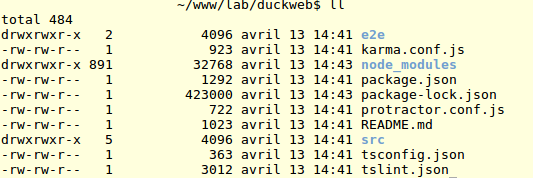
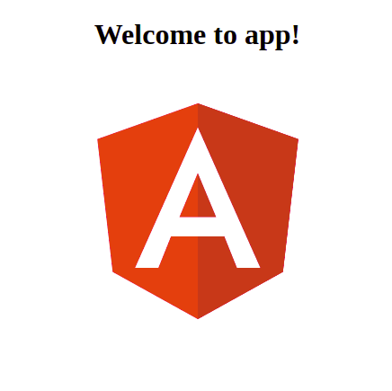
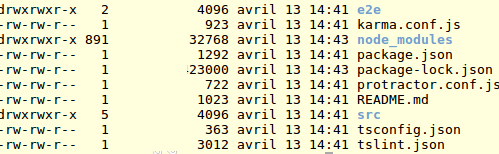
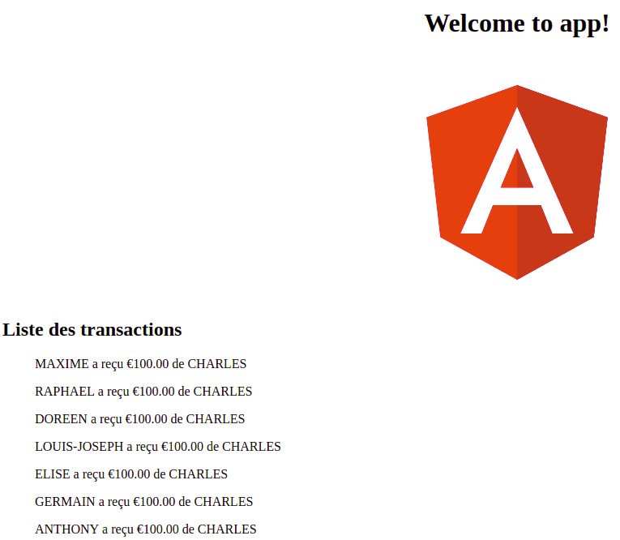

Chap 7 - Introduction au framework Angular

AngularJS est un framework JavaScript libre et open source développé par Google. Il permet la construction d'applications client reactives en HTML et en TypeScript. Angular est d'ailleurs lui-même écrit en TypeScript.
Angular, propose un outil, Angular CLI (Command line), qui facilite la création et le développement de projets web en ligne de commande.
Pour mieux comprendre le fonctionnement d'Angular, rien de mieux que développer un petit projet web basé sur celui-ci.
Installation d'Angular CLI
$ npm install -g @angular/cli # Rajouter "sudo" si nécessaire
Création d'un nouveau projet
On va se mettre en dehors de notre projet DuckCoin, pour éviter de le polluer. Dans un dossier autre que celui de Duckcoin, saisir la commande suivante :
$ ng new duckweb # Cette commande va créer un nouveau dossier duckweb.
Ca va mettre un peu de temps à se créer, mais pas de panique vous êtes sur la bonne voie ;-).

Une fois la création terminée, on va pouvoir lancer notre projet :
$ cd duckweb
$ ng serve --open

En avant d'aller plus loin découvrons un peu la structure, puis l'architecture d'un projet Angular.
Structure d'un projet Angular
À l'intérieur d'un projet angular on trouve un certain nombre de dossiers et de fichiers :

- e2e : ce dossier stock des scripts pour effectuer des tests unitaires, un ensemble de d'énoncé et d'instruction qui permettent de vérifier que son code fonctionne bien selon un certain cahier des charges.
- node_modules : c'est dans ce dossier que sont installés tous les plugins Node installé via npm.
- src : c'est dans ce dossier seront stockés nos fichiers sources,le code quoi. C'est dans ce dossier que l'on passera 99% du temps.
- angular-cli.json : un fichier de configuration pour Angular CLI.
- package.json : fichier de configuration pour Node
- protractor.conf.js : Protractor est un outil utilisé pour les Tests unitaires. Ce fichier de configuration est utilisé par lui.
- karma.conf.js : karma est un autre outil utilisé dans les tests unitaires. Tester son projet est une philosophie forte chez Angular.
- tsconfig.json : fichier de configuration pour le compilateur de TypeScript (tsc).
- tslint.json : tslint est utilitaire qui permet de vérifier les fichiers TypeScript (bug, import non utilisé,...)
Architecture d'un projet Angular
Le bloc de base d'une application Angular est le composant, qui peut être vu comme comme la combinaison :
- D'une Vue : du contenu HTML
- D'un Modèle de données : les informations qui vont être affichées dans le contenu HTML
- D'un Contrôleur, qui va se charger de la logique derriere l'affichage des données dans la vue.
Un composant peut être constitué d'autres composants. Par exemple :
- Twitter [Composant Root]
- Entête (Titre, logo,...
- Un contenu principal [Composant Content]
- Tweets [Composant liste de Tweets]
- Un tweet [Composant Tweet] est constitué de contenu
- ce contenu peut être soit une image [Composant image], soit du texte [Composant texte]
- ce contenu est aussi fait de commentaires [Composant Commentaire]
- Un tweet [Composant Tweet] est constitué de contenu
- Tweets [Composant liste de Tweets]
L'intérêt d'une architecture en composants est que si jamais on souhaite étendre une fonctionnalité particulière, plutot que de la redefinir, on va créer un composant qui pourra être appelé partout (afficher des tweets en page d'accueil, sur son profil, dans les résultats de recherche,...).
Le composant principal d'Angular est définit à l'intérieur du fichier src/app/app.component.ts, où l'on retrouve aussi d'autres fichiers qui forment le MVC du projet.
app.component.css
app.component.html
app.component.spec.ts
app.component.ts
app.module.ts
Une application a toujours au moins un module racine qui permet le lancement du projet (à l'exemple d'un fichier index.html en racine d'un site web). C'est ce module qui va amorcer le composant Root (AppComponent).
Par convention, celui-ci s'appelle AppModule est définidans le fichier src/app/app.module.ts.
import { BrowserModule } from '@angular/platform-browser';
import { NgModule } from '@angular/core';
import { AppComponent } from './app.component';
@NgModule({
declarations: [
AppComponent,
TransactionComponent
],
imports: [
BrowserModule
],
providers: [],
bootstrap: [AppComponent]
})
export class AppModule { }
S'il fallait faire un comparatif avec un véhicule, les composants seraient des élements comme le pare-brise, les retroviseurs, les roues, ...tandis que le module Root serait le moteur, sans lequel le véhicule, même le plus beau au monde (avec les plus beaux composants), ne pourrait démarrer.
Angular dans les templates
*ngFor
Permet de boucler sur les éléments d'un tableau à l'intérieur d'un template html.
Supposons que l'on ait définit la liste des mois de l'année dans une liste :
let months_of_year = ['Janvier', 'Fevrier', 'Mars', 'Avril', 'Mai', 'Juin', 'Juillet',
'Aout', 'Septembre', 'Octobre', 'Novembre', 'Décembre']
l'affichage de tous les éléments se fait simplement de la manière suivante :
<div *ngFor="let month of months_of_year">
Mois de l'année : {{month}}
</div>
*ngIf
Comme vous pouvez le devinez, *ngIf est le "if...else" adaptée aux templates.
<span *ngIf="isConnected">Je suis connecté.</span>
Pipe
Comme dans la plupart des moteurs de templates, Angular permet l'utilisation de pipes qui permettent de modifier une variable ou un contenu avant qu'il soit affiché. Le framework proposent un certain nombre de pipes prêts à l'emploi, comme titlecase, currency,...Mais il est tout à fait possible de créer son propre pipe.
<div>
<h2>{{ 'charles edou nze' | titlecase }}</h2>
</div>
titlecase permet de mettre en capitale les premières lettres de chaque mot. Ce qui donnera le résultat suivant :
Charles EDOU NZE
Exercez-vous
1) Créez un nouveau projet comme expliqué précédemment
2) Que pouvez-vous remarquer dans l'arborescence de fichiers d'Angular...vis-à-vis de Ionic
3) A l'aide de la commande suivante, générez un nouveau Composant nommé "transaction" :
$ ng g c transaction
Que s'est-il passé ? Ouvrez le fichier src/app/transaction/transaction.component.ts et examinez-le.
4) Ouvrez le fichier src/app/app.component.html, et remplacez le contenu ci-dessous (on ne gardera que le logo d'Angular)
<h2>Here are some links to help you start: </h2>
<ul>
<li>
<h2><a target="_blank" rel="noopener" href="https://angular.io/tutorial">Tour of Heroes</a></h2>
</li>
<li>
<h2><a target="_blank" rel="noopener" href="https://github.com/angular/angular-cli/wiki">CLI Documentation</a></h2>
</li>
<li>
<h2><a target="_blank" rel="noopener" href="https://blog.angular.io/">Angular blog</a></h2>
</li>
</ul>
Par le code suivant :
<app-transaction></app-transaction>
Que s'est-il passé dans ce qui est affiché dans votre navigateur ?
P.S : notre application a désormais l'architecture suivante :
- DuckWeb
- Transaction
5) Remplacez le contenu du fichier src/app/transaction/transaction.component.html. Quel changement dans votre navigateur ?
6) Ouvrez le fichier src/app/transaction/transaction.component.ts dans le constructeur, définissez une liste de transactions comme vu dans le TP précédent, puis modifiez le fichier src/app/transaction/transaction.component.html, de manière à avoir le résultat suivant :

Que pouvez-vous conclure sur le rôle d'un composant ? Comprenez-vous mieux comment fonctionne les composants Ionic ?
7) Dans le fichier src/app/transaction/transaction.component.ts, ajoutez les lignes suivantes dans la partie dédiée aux imports :
import { Injectable } from '@angular/core';
import { HttpClient } from '@angular/common/http';
Puis modifiez le fichier comme ceci :
import { Component, OnInit } from '@angular/core';
import { Injectable } from '@angular/core';
import { HttpClient } from '@angular/common/http';
const apiUrl='https://duckcoin.charlesen.fr';
@Component({
selector: 'app-transaction',
templateUrl: './transaction.component.html',
styleUrls: ['./transaction.component.css']
})
export class TransactionComponent implements OnInit {
transactions: any = [];
constructor(private http: HttpClient) {
// On récupère du contenu via une requete Http Get
this.http.get(`${apiUrl}/transactions`).subscribe(
data => {
this.transactions = data['transactions'];
}, err => {
console.log("Une erreur s'est produite.")
});
//...
}
ngOnInit() {
}
}
Vous avez planté normalement. Savez-vous pourquoi ?
No provider for HttpClient!
Dans le fichier src/app/app.module.ts ajoutez les lignes suivantes :
import { HttpClientModule } from '@angular/common/http';
// ...
imports: [
BrowserModule,
HttpClientModule,
// ...
IonicModule.forRoot(MyApp, {
// tabsPlacement: 'top',
backButtonText: 'Retour'
})
],
...
Grâce à l'utilisation du module http, vous pourrons récupérer des données directement depuis le site hébergeant notre blockchain.
Vous retrouverez les sources, ainsi que les corrections des exercices de ce TP à l'adresse:
https://github.com/charlesen/ionic-book/tree/master/examples/duckweb
Annexes
- Angular Tutorial : https://www.tutorialspoint.com/angular4/index.htm
- Documentation officielle :